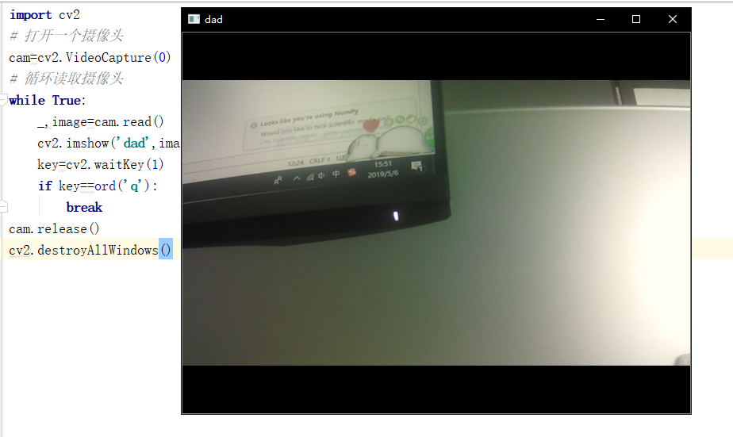
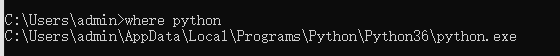

任务2.3.1 人脸检测#
【任务描述】#
利用摄像头实时录制视频，调用OpenCV库检测视频中人脸的具体位置和范围并框出来，效果参考图2.3.1.1。
图2.3.1.1 效果参考图
【学习目标】#
1.知识目标
（1）掌握OpenCV读入图像，显示图像，保存图像的方法。
（2）掌握OpenCV写文字的方法。
（3）理解人脸检测的原理。
2.能力目标
（1）能运用pip安装OpenCV。
（2）能进行图像的打开，显示及保存操作。
（3）会用dlib库进行人脸检测。
3.素质素养目标
（1）培养学生精益求精、专心细致的工作作风；
（2）培养学生肖像隐私保护意识；
（3）培养文明使用视频数据的意识；
（4）培养爱护环境的环保意识。
【任务分析】#
1.重点
人脸检测的方法
2.难点
理解人脸检测的原理，进行人脸区域的保存。
【知识链接】#
人脸图像采集是人脸识别项目中一项重要工作，不同的人脸图像都能通过摄像镜头采集下来，比如静态图像、动态图像、不同的位置、不同表情等方面都可以得到很好的采集。当用户在采集设备的拍摄范围内时，采集设备会自动搜索并拍摄用户的人脸图像。
人脸检测在实际中主要用于人脸识别的预处理，即在图像中准确标定出人脸的位置和大小。人脸图像中包含的模式特征十分丰富，如直方图特征、颜色特征、模板特征、结构特征及Haar特征等。人脸检测就是把这其中有用的信息挑出来，并利用这些特征实现人脸检测。主流的人脸检测方法基于以上特征采用Adaboost学习算法，Adaboost算法是一种用来分类的方法，它把一些比较弱的分类方法合在一起，组合出新的很强的分类方法。人脸检测过程中使用Adaboost算法挑选出一些最能代表人脸的矩形特征(弱分类器)，按照加权投票的方式将弱分类器构造为一个强分类器，再将训练得到的若干强分类器串联组成一个级联结构的层叠分类器，有效地提高分类器的检测速度。
一、计算机视觉库-OpenCV#
OpenCV是一个开源的轻量级且高效的跨平台计算机视觉和机器学习软件库，实现了图像处理和计算机视觉方面的很多通用算法。OpenCV可以运行在Linux、Windows、Android和Mac OS操作系统上。它具有C ++，Python，Java和MATLAB语言的接口。
（1）安装Opencv
前面我们已经安装了Python3，在这里我们介绍一下在Python环境中安装OpenCV的过程。
① 我们进入命令提示窗口，输入pip install opencv-python,（这里请注意我们安装的是opencv-python，而不是opencv）,如图2.3.1.2所示，等待安装成功。
2.3.1.2 命令提示窗口
② 安装成功后，我们进入python，调用OpenCV，如图2.3.1.3所示。请注意要使用import cv2, 而不是import opencv等其他名字。
图2.3.1.3 调用OpenCV ③ 当我们的python提示符（>>>）出现的话，代表OpenCV已经成功导入了，接下来我们就可以进行图像的读取和显示了。
（2）OpenCV读入图像
使用函数 cv2.imread(filepath, flags)读入图像。filepath是指图像在此程序的工作路径或者完整路径，flags是读取这幅图片的方式，有以下三个值可以选择。
① cv2.IMREAD_COLOR：读入一副彩色图像。图像的透明度会被忽略，0代表读入灰度图像。
② cv2.IMREAD_GRAYSCALE：以灰度模式读入图像
③ cv2.IMREAD_UNCHANGED：读入一幅图像，并且包括图像的 alpha 通道
（3）OpenCV显示图像
读入图像后使用函数 cv2.imshow()可以显示图像。在显示图像时窗口会自动调整为图像大小。cv2.imshow()函数有两个参数，第一个参数是你定义的窗口的名字，第2个参数是读入的要显示的这个图像文件。请注意窗口的显示必须持续一段时间，所以我们需要调用cv2.waitKey()函数实现窗口的持续显示，显示完毕图像后要关闭所有窗口。图2.3.1.4为图像文件显示效果。
import cv2
#读入一副图像
img = cv2.imread('images/bridge.jpg’,0)
#将图像显示在窗口
cv2.imshow('image_bridge',img)
#窗口等待的毫秒数，如果我们设置这个函数的参数为 0，那它将会无限期的等待键盘输入。
cv2.waitKey(0)
#关闭所有窗口
cv2.destroyAllWindows()
图2.3.1.4 图像文件显示效果
（4）OpenCV保存图像
使用函数cv2.imwrite()来保存一个图像。首先需要一个文件名，之后才是你要保存的图像。例如cv2.imwrite(‘lena2.png’,img)
（5）OpenCV中的绘图函数
OpenCV绘图函数主要有cv2.line() , cv2.cicle() , cv2.rectangle() , cv2.ellipse() , cv2.putText()等，分别用来绘制直线、圆形、矩形、椭圆、添加文字等操作。
矩形绘制的函数是cv2.rectangle(img, pointl, point2, color, thickness)，其中的参数说明如下，返回添加了矩形绘制效果的目标图像数据。
img——需要绘制的目标图像对象
pointl——左上顶点位置像素坐标
point2——右下顶点位置像素坐标
color——绘制使用的颜色
thickness——绘制的线条宽度
圆形绘制的函数是cv2.circle(img, centerPoint, radius, color, thickness)，其中的参数说明如下，返回添加了圆形绘制效果的目标图像数据。
img——需要绘制的目标图像对象
centerPoint——绘制的圆的圆心位置像素坐标
radius——绘制的圆的半径
color——绘制使用的颜色
thickness——绘制的线条宽度
在图片上添加文字的函数是cv2.putText( img, text, point, font, size, color,thickness )，其中的参数说明如下，返回添加了文本绘制效果的目标图像数据。
img——需要绘制的目标图像对象
text——绘制的文字
point——左下顶点位置像素坐标
font——绘制的文字格式
size——绘制的文字大小
color——绘制使用的颜色
thickness——绘制的线条宽度
例：在图像中绘制实心圆、绘制矩形框、添加文字。
import cv2
import cv2
#读入一副图像
img = cv2.imread('lena.jpg',1)
cv2.rectangle(img,(150,200),(350,400),(0,255,0),3)
#画圆
cv2.circle(img,(300,100), 63, (0,0,255), -1)
#设置字体
font = cv2.FONT_HERSHEY_PLAIN
#在指定位置写
cv2.putText(img, 'OpenCV', (100,200) ,font,5, (0, 255,0) , thickness=3)
#将图像显示在窗口
cv2.imshow('image',img)
#销毁所有窗口
cv2.waitKey(0)
cv2.destroyAllWindows( )
opencv绘制函数效果如图2.3.1.5所示。
图2.3.1.5 opencv绘制函数效果
二、使用haar分类器进行人脸检测的原理#
Haar分类器(2001年Paul_Viola和Michael_Jones提出)，以Haar特征分类器为基础的对象检测技术是一种非常有效的对象检测技术。Haar分类器基于机器学习通过使用大量的正负样本图像训练得到一个级联分类器,通过这个级联分类器来进行对象检测。Haar人脸分类器由Haar特征提取、离散强分类器、强分类级联器组成，核心思想是提取人脸的Haar特征，使用积分图对特征进行快速计算，然后挑选出少量关键特征，送入由强分类器组成的级联分类器进行迭代训练。
1.Haar-like特征#
Haar-like矩形特征是用于物体检测的数字图像特征。这类矩形特征模板（如图2.3.1.6所示）由两个或多个全等的黑白矩形相邻组合而成，而矩形特征值是白色矩形的灰度值的和减去黑色矩形的灰度值的和，矩形特征对一些简单的图形结构，如线段、边缘比较敏感。如果把这样的矩形放在一个非人脸区域，那么计算出的特征值应该和人脸特征值不一样，所以这些矩形就是为了把人脸特征量化，以区分人脸和非人脸。
在给定的有限的数据样本情况下,基于特征的检测不但能够编码特定区域的状态,而且通过基于特征设计的系统远比基于像素的系统快。这就是为什么要选择基于特征的方法而不选择基于像素的方法。
图2.3.1.6 特征模板
脸部的特征能够由矩形特征简单地描绘，例如眼睛要比脸颊颜色深，鼻梁两侧要比鼻梁颜色深，嘴巴要比周围颜色深等。矩形特征在人脸图像的特征匹配如图2.3.1.7所示。
图2.3.1.7 矩形特征在人脸图像的特征匹配
对于每一个特征的计算我们需要计算白色和黑色矩形内的像素和,对于一个24*24像素分辨率图像，其内的矩阵特征数目大约160000多个，这个计算量太大了。为了解决这个问题，引入了积分图像,这可以大大的简化求和运算。
2.积分图#
积分图被定义为坐标A(x,y)的积分图是其左上角的所有像素之和，这样对每个像素进行少量的计算得到的“积分图”可以在相同的时间里计算尺度大小不同的矩形特征值，因此大大提高计算速度。对于任何一个区域的像素和只需要对积分图像上的四个像素操作即可,这样可以使运算大大提升！
3.Adaboost分类器#
接下来使用Adaboost分类器从大量的特征中选出最好的特征。为了达到这个目的, 将每一个特征应用于所有的训练图像, 对于每一个特征要找到它能够区分出正样本和负样本的最佳阈值。但是很明显, 这会产生错误或者错误分类。我们要选取错误率最低的特征, 这说明它们是检测面部和非面部图像最好的特征(这个过程其实不像我们说的这么简单, 在开始时每一张图像都具有相同的权重, 每一次分类之后, 被错分的图像的权重会增大。同样的过程会被再做一遍, 然后我们又得到新的错误率和新的权重, 重复执行这个过程直到达到要求的准确率或者错误率或者要求数目的特征找到)。最终的分类器是这些弱分类器的加权和, 之所以称为弱分类器是因为只是用这些分类器不能实现对图像进行分类, 但是与其他的分类器联合起来就是一个很强的分类器了。
三、人脸检测操作流程#
1.获取实时的视频流#
在本任务实施前，你应该有一个摄像头，并且已经配置好OpenCV的环境（可以使用 pip3 install opencv-python 下载）。
# 打开一个摄像头
cam=cv2.VideoCapture(0)
# 循环读取摄像头的数据
while True:
_,image=cam.read()
cv2.imshow('dad',image)
key=cv2.waitKey(0)
if key==ord('q'): #当点击键盘中的q键时推出
break
# 记得释放摄像头和关闭所有窗口
cam.release()
cv2.destroyAllWindows()
在上面的代码中，我们首先使用 cv2.VideoCapture（0）打开了一个摄像头，这里的0是指摄像头的索引，根据你自己本身的情况而定，当然0也可以换成一个视频地址，那就变成了读取一段视频并显示，接着我们使用一个循环，读取摄像头中的数据，cam.read()返回两个数据，其中_ 是布尔值，如果读取帧是正确的则返回True，如果文件读取到结尾，它的返回值就为False。image就是每一帧的图像，是个三维矩阵，使用cv.imshow()可以把图片显示出来。接着使用key接收键盘值 如果这个键盘值等于q的键盘值则退出循环。
最后，我们一定不要忘记使用cam.release()释放摄像头，以及使cv2.destroyAllWindows() 关闭所有窗口释放资源。代码运行结果如图2.3.1.8所示，这样就是表示我们获取到了视频流。

图2.3.1.8 获取视频流效果
2.在视频流中使用haar分类器进行人脸检测#
在本任务开始之前，我们需要用到Opencv已经训练好的人脸检测模型 haarcascade_frontalface_default.xml，我们可以通过2种方式得到，第1种是到Git上https://github.com/opencv/opencv下载对应的源码，然后找到opencv/data/haarcascades/目录，就可以得到该xml文件了。第2种方式是找到你pip 的地址，一般在python安装地址的lib/site-pckages里面，我们可以通过打开cmd 输入where python查看python安装地址，有了这个模型以后，我们就可以开始编写人脸检测的代码了。 
import cv2
# 加载人脸检测模型
face_date=cv2.CascadeClassifier('haarcascade_frontalface_default.xml')
image=cv2.imread(r'images/face1.jpg')
# 进行人脸检测
faces=face_date.detectMultiScale(image,1.3,5)
# 将检测到的人脸标注出来
for x,y,w,h in faces:
cv2.rectangle(image,(x,y),(x+w,y+h),(0,255,0),1)
cv2.imshow('img',image)
cv2.waitKey(0)
程序运行结果参考图2.3.1.9。
图2.3.1.9 图像中的人脸检测效果
这是最简单的识别人脸。前面已经介绍了如何打开摄像头获取图像，我们需要将以上图像中人脸检测换成视频中的人脸检测。如果你已经掌握了的话，先不要看下面的代码，先自己尝试去写一个摄像头的人脸识别程序，写完之后再来看这个代码。如果可以顺利运行的话，说明你已经掌握了前面的知识点了。
# video
cam=cv2.VideoCapture(0)
while True:
_,img=cam.read()
gray=cv2.cvtColor(img,cv2.COLOR_BGR2GRAY)
faces=face_date.detectMultiScale(img,1.3,5)
for face in faces:
x,y,w,h=face
cv2.rectangle(img,(x,y),(x+w,y+h),(0,255,0),1)
cv2.imshow('opencv face',img)
flag=cv2.waitKey(1)
if flag==ord('q'):
break
cam.release()
cv2.destroyAllWindows())
以上代码的运行结果如图2.3.1.10所示，人脸位置和区域绘制了绿色的矩形框。
图2.3.1.10 视频中的人脸检测效果
3.保存人脸ROI区域#
ROI（region of interest），感兴趣区域。在机器视觉、图像处理中，从被处理的图像以方框、圆、椭圆、不规则多边形等方式勾勒出需要处理的区域，称为感兴趣区域，ROI。在Halcon、OpenCV、Matlab等机器视觉软件上常用到各种算子（Operator）和函数来求得感兴趣区域ROI，并进行图像的下一步处理。
在图像处理领域，感兴趣区域(ROI)是从图像中选择的一个图像区域，这个区域是你的图像分析所关注的重点。圈定该区域以便进行进一步处理。使用ROI圈定你想读的目标，可以减少处理时间，增加精度。
感兴趣区(Region of Interest,ROIs)是图像的一部分，它通过在图像上选择或使用诸如设定阈值(thresholding) 或者从其他文件(如矢量) 转换获得等方法生成。感趣区可以是点、线、面不规则的形状，通常用来作为图像分类的样本、掩膜、裁剪区或其他操作。
在计算机视觉中，图像ROI提取也是一个重要的内容，它可以将你感兴趣的内容提取出来做进一步的操作。例如：在人脸识别中，你需要先检测出人脸，并提取人脸ROI区域进行下一步的人脸识别；在车牌识别中，你需要提取检测到的车牌ROI区域，并进行下一步的识别等等。
事实上，这种操作在OpenCV中并不难，你只需要得到你想要提取的ROI区域的坐标和宽高即可，我们可以使用如下的代码实现：
import cv2
face_date=cv2.CascadeClassifier('haarcascade_frontalface_default.xml')
cam=cv2.VideoCapture(0)
while True:
_,img=cam.read()
gray=cv2.cvtColor(img,cv2.COLOR_BGR2GRAY)
faces=face_date.detectMultiScale(gray,1.3,5)
for face in faces:
x,y,w,h =face
#获得人脸roi区域，并保存
face_img=img[y:h+y, x:w+x]
cv2.imwrite('faceroi.jpg',face_img)
cv2.imshow('i',img)
cv2.waitKey(1)
cam.release()
cv2.desotryAllWindow()
素质素养养成#
（1）在利用摄像头录制视频的过程中培养学生保护隐私、合理文明使用视频的意识；
（2） 通过调用OpenCV的人脸检测模块的基本流程培养学生遵守规则和流程的职业素养；
（3）通过人脸检测和保存人脸ROI区域了解视频数据质量对实验效果的影响，培养学生操作规范精益求精的职业精神。
（4）通过校园美景图和乱丢垃圾的图引导学生爱护校园、爱护环境，培养学生的文明意识、环保意识。
任务实施#
任务工作单1：人脸检测环境准备和测试#
组号：———————— 姓名：———————— 学号：———————— 检索号： ————————
引导问题：
（1）安装OpenCV-Python，导入CV2库。
（2）读入一张有正脸的人脸图像，显示图像，代码和运行效果截图。
（3）读入一张你们小组成员的合照，在图像添加文字（内容为你们小组的宣言），代码和运行效果截图。
（4）读入一张校园风景照，在图像框出你最喜欢的部分，代码和运行效果截图。
（5）读入一张乱丢垃圾后的路面图，用圆形圈出垃圾，代码和运行效果截图。
任务工作单2：人脸检测原理认知#
组号：———————— 姓名：———————— 学号：———————— 检索号： ————————
引导问题：
(1)Haar人脸分类器是什么？
(2)Haar人脸分类器的原理是什么？
任务工作单3：人脸检测方法探究#
组号：———————— 姓名：———————— 学号：———————— 检索号： ————————
引导问题：
（1）导入dlib库，读入图像或者视频进行正脸人脸检测，绘制人脸区域。代码和运行结果截图
（2）读入图像或者视频进行正脸人脸检测，保存人脸区域的坐标值。代码和运行结果截图
任务工作单4：人脸检测方法优化（讨论）#
组号：———————— 姓名：———————— 学号：———————— 检索号： ————————
引导问题：
（1）小组讨论交流，总结确定人脸检测的方法流程。
（2）记录人脸检测调试过程中的错误。
任务工作单5：人脸检测方法优化（展示）#
组号：———————— 姓名：———————— 学号：———————— 检索号： ————————
引导问题：
（1）每小组推荐一位小组长，汇报实现过程，借鉴各组分享的经验，进一步优化实现的步骤。
（2）检查自己不足的地方。
任务工作单6：人脸检测实践#
组号：———————— 姓名：———————— 学号：———————— 检索号： ————————
引导问题：
（1）按照正确的流程和方法完成实时视频人脸检测任务。
（2）自查人脸检测实现过程中出现的错误原因。